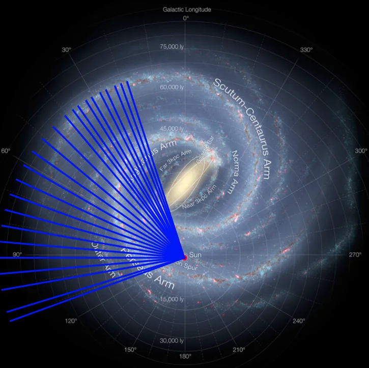
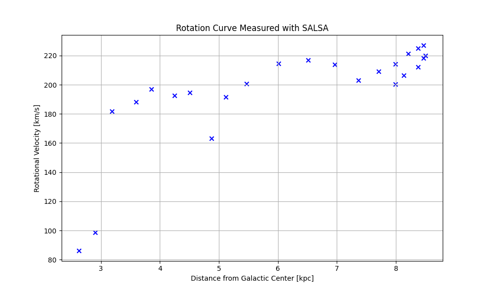
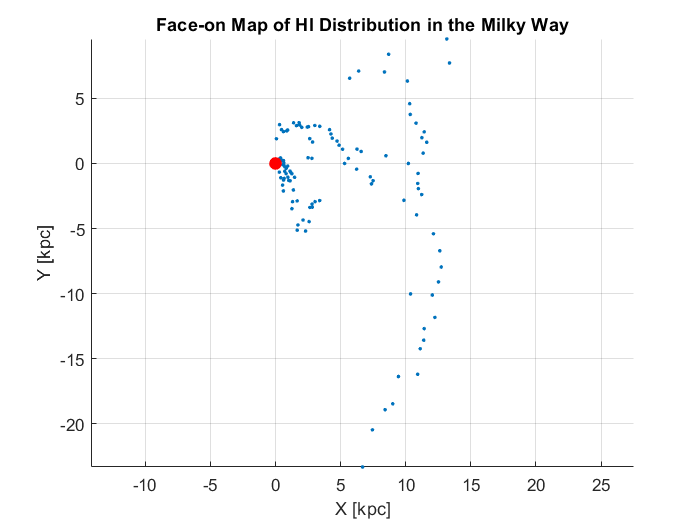

Mapping the Milky Way
Mapping the Milky Way with SALSA
Radio Astronomy · Signal Processing · MATLAB
For the Modern Astrophysics course at Chalmers University of Technology, I used SALSA, a 2.3 m radio telescope at Onsala Space Observatory, to observe the 21 cm line of neutral hydrogen across the plane of the Galaxy. From the Doppler shift of that line I measured the Milky Way's rotation curve and built a face-on map of its hydrogen clouds.
Why hydrogen
Neutral hydrogen fills the Galactic disc and emits faintly at 1420 MHz. Gas moving towards us shifts the line to higher frequencies and gas moving away shifts it lower, so each peak in a spectrum gives the speed of a hydrogen cloud along the line of sight.
What I did
- Observations: spectra in frequency-switching mode (256 channels, 2.5 MHz bandwidth, 20 s integrations) at Galactic longitudes from 16° to 190°.
- Signal processing: baseline subtraction on every spectrum in MATLAB, then Gaussian fits to the hydrogen peaks to measure their velocities precisely.
- Rotation curve: the tangent-point method on 24 directions between 18° and 110°, with the Sun 8.5 kpc from the Galactic centre and orbiting at 220 km/s.
- Map: about 125 velocity peaks converted into distances and then into positions for a top-down view of the Galaxy.

Results
The rotation velocity climbs to about 180 km/s within 3.2 kpc of the Galactic centre and then stays roughly flat, mostly between 190 and 227 km/s, out to 8.5 kpc. If visible matter were all there is, the velocity would drop at larger radii. The flat curve points to unseen mass, usually attributed to dark matter, and matches the curves measured for other spiral galaxies.

The face-on map places each hydrogen cloud at its derived position. Some points fall off the expected spiral arms, partly because the map takes a single distance for each cloud.

Near or far?
Inside the Sun's orbit, one velocity can match two distances along the same line of sight. Observing the same direction slightly above the Galactic plane tells them apart: clouds that fade are far away, and clouds that stay bright are near. I tested this at longitude 45°, where three of the four hydrogen peaks had two possible distances.
Project Information
- Category Radio Astronomy
- Course Modern Astrophysics (RRY125)
- University Chalmers University of Technology
- Telescope SALSA, 2.3 m, Onsala Space Observatory
- Tools MATLAB
- Date December 2024